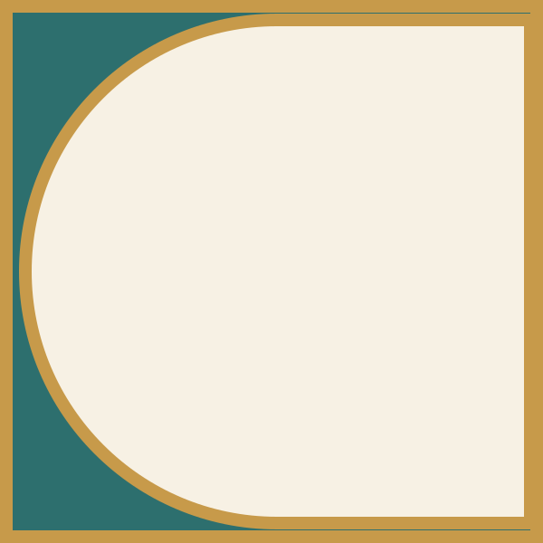
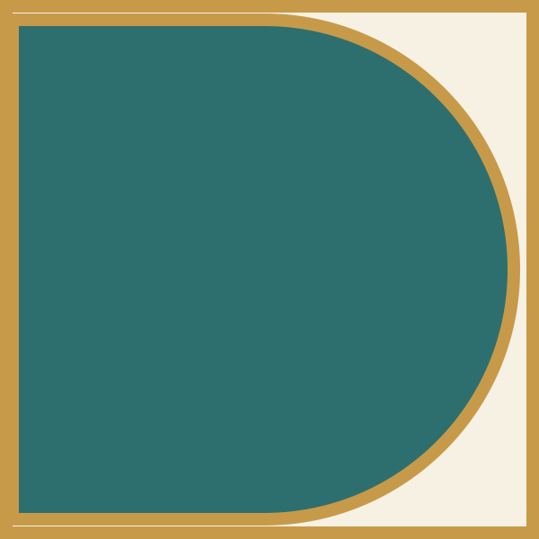
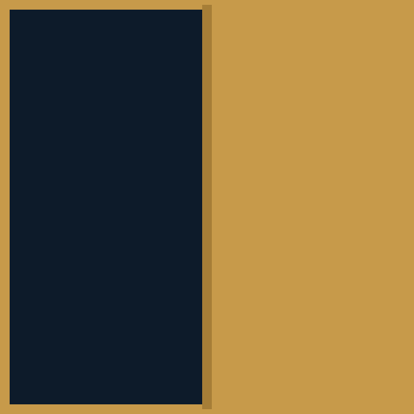

Advanced Clinical Design Institute
Experience Care. Transform Practice. Elevate Outcomes.
An advanced professional education and credentialing institute that develops firsthand clinical understanding and stronger professional judgment in the people who shape healthcare environments.
Why this work matters
Healthcare environments profoundly affect care. The professionals who shape them do not consistently experience the clinical realities and consequences of their decisions.
Healthcare-design expertise is too often built through siloed, indirect, and precedent-based learning. When that learning stops short of clinical reality, the effects travel.
- Accepted solutions and accepted mistakes are repeated.
- Designers often do not experience the downstream consequences.
- Post-occupancy feedback loops remain weak.
- Minimum standards become the target rather than the floor.
- Owners ultimately pay financially.
- Clinicians contend with environments that should have been designed to support them.
- Patients experience the consequences.
The ACDI distinction
Observation is not the same as learning.
Placing an experienced professional in a clinical setting does not ensure they understand what is occurring, why it matters, or how it should influence design. ACDI prepares participants to recognize what matters and translate firsthand experience into professional judgment.
What changes
ACDI is designed to change what participants
- notice
- ask
- understand
- interpret
- decide
- and do.
ACDI develops more than knowledge. It develops demonstrated competence and stronger professional judgment.
The pathway
Each stage prepares participants to extract meaning from the next.
- Tier 1 Preparation Foundational knowledge that teaches participants what to look for and how to understand what they are seeing.
-

Tier 2 Simulation Structured application under the uncertainty, human response, and time pressure that drawings and classrooms abstract away. -

Tier 3 Clinical Immersion Firsthand clinical complexity, where the variables are no longer controlled, held to a consistent observation and documentation framework. -

Tier 4 Fellowship Disciplined application of ACDI learning in professional practice, with evidence of what followed.
Education + Experience → Demonstrated Competence → Credential
Tiers 1–3 form the integrated core leading to initial certification. Attendance alone does not earn the credential.
Who ACDI serves
A multidisciplinary field, deliberately brought together.
Design professionals
Understand clinical environments in ways conventional professional education cannot provide.
Firms and employers
Develop healthcare-design professionals whose clinical understanding becomes an organizational capability.
Healthcare leaders
Help the professionals influencing your environments understand the realities clinicians encounter in care delivery and after occupancy.
Professional societies
Advance healthcare-design competency through rigorous experiential education and demonstrated competence.
Product affiliates
Understand products and equipment in the context of clinical use, without purchasing influence or endorsement.
Ultimately, the work serves clinicians, patients and families, healthcare organizations, and communities.
Where ACDI is today
Credibility before scale.
ACDI is preparing its Alpha cohort, which has one primary objective: to determine whether the learning model produces the change in judgment it is designed to produce. Repeatable delivery comes next, and public launch follows the evidence.